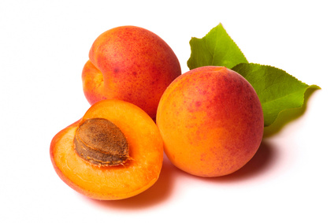

Field & Pickling Cucumbers (Cucumis sativus)

Mating & Breeding System: Most cucumber varieties have separate male and female flowers located on the same plant. Most varieties are self-compatible, but due to the physical separation of the male and female flowers, insects are required to move pollen. There are typically more male flowers than female flowers on a given plant, and the male flowers mature first on an individual plant. The male flower produces pollen, and both male and female flowers produce nectar. Male nectar has a higher sugar concentration than the female. Bees usually collect pollen in the morning and switch to nectar in the afternoon, visiting both types of flowers and transferring the large, sticky pollen grains in the process. Fertility of the plant, however, is greatest in the morning and declines as the day progresses. Flowers of both sexes are typically open for only a single day, after which male and insufficiently-pollinated female flowers will drop. Some male-sterile hybrid varieties have been developed which produce only female flowers. These varieties are intended to increase yield, but they require interplanting of male-fertile varieties to provide pollen. Ovaries vary in length and number of ovules, with more ovules translating to larger fruits. Larger, older vines tend to produce larger flowers. Maturing fertilized fruit will inhibit development of new female flowers, and therefore limit the number of fruits an individual vine can produce. Pollination, Quality & Yield: This information applies only to field and pickling cucumber pollination, since varieties grown in Ontario for fresh consumption are parthenocarpic - they develop without fertilization of the ovules. Pollination of these varieties is undesirable because it leads to fruits with irregular and uneven shape. Pollination may be reduced in these crops by growing them in greenhouses, planting more attractive crops near outdoor fields, removal of male flowers, and restricting the use of honey bees in the vicinity during the bloom time of the cucumber. For pickling cucumbers, enhanced pollination can increase the number of seeds in individual fruits, and also increase yield per hectare over unpollinated crops or those pollinated by hand. Pollination of these varieties also improves the shape and value of the individual fruits, in contrast with the parthenocarpic varieties discussed above. Cucumbers, like other cucurbits, have numerous ovules and thus require a great deal of pollen for full pollination. As many as 18 visits by pollen carriers to female flowers are necessary for full pollination. Flowers with larger ovaries tend to be produced by older vines, so there is value in delaying pollination in order to produce larger fruits with more seeds (monoecious varieties), or planting male plants several days after female plants in gynoecious varieties to ensure pollen availability at the correct time. Pollination Recommendations: Honey bees are highly effective pollinators of cucumber, providing the required number of visits and pollen delivery. Depending on planting density, 2.5-8 hives per hectare are recommended. Planting density in the crop varies considerably, and these stocking recommendations are also expressed as one honey bee colony per 50,000 plants. The bees should be placed in shaded areas at the edge of small fields, and can be placed in the crop itself in larger fields in such an arrangement that any point in the field is no more than 250m from a hive. If hives are placed in the field itself, shade and water should be provided for the bees on hot days. Bumble bees can be more effective pollinators than honey bees due to their earlier foraging hours and higher floral visitation rate. They may be of greatest practical utility on pickling cucumbers in greenhouses due to the large number of expensive colonies that would be required in a field situation. If a male-sterile variety is used, care must be taken to plant a pollenizer variety in the field, at a rate of 5-15% of total seed. In this scenario, honey bees (which naturally prefer staminate flowers, even though their prime target is nectar) are forced to visit the female flowers more frequently. Brood pheromone has been shown to improve pollen foraging by honey bees on cucurbits in the southern U.S. and its potential for use in Ontario should be further investigated. Small and large ground-nesting bees are effective cucumber pollinators, but are rarely present at the densities needed to perform this service at an agricultural scale. In small fields of cucurbits, or in large fields managed with them in mind, the native squash bee Peponapis pruinosa does an admirable job of cucurbit pollination. This ground-nesting bee works in the early morning, when the flowers are at their highest fertility, and can reach very high densities at the field margins and within the field itself. Other wild bees, particularly bumble bees, are also effective cucurbit pollinators. References Bodnar, J. 1987. Pollination of vine crops. OMAFRA FactSheet 87-043. Canadian Department of Agriculture. 1961. Effects of honey bees on cucumber production. Charlottetown Experimental Farm Research Report 17. Connor, L.J. & Martin, E.C. 1969. Honey bee pollination of cucumbers. American Bee Journal 109:389. Connor, L.J., Collison, C.H., & Martin, E.C. 1975. The pollination of hybrid cucumbers by honey bees: research from 1967 to 1973. Proceedings of the 3rd International Symposium on Pollination 165-174. Delaplane, K.S. & Mayer, D.F. 2000. Crop Pollination by Bees. CABI Publishing, New York. Free, J.B. 1993. Insect Pollination of Crops, 2nd edition. Academic Press. Gingras, D., Gingras, J., & De Oliveira, D. 1999. Visits of honeybees (Hymenoptera: Apidae) and their effects on cucumber yields in the field. Journal of Economic Entomology 92:435-438. Julier, H.E. & Roulston, T.H. 2009. Wild bee abundance and pollination service in cultivated pumpkins: farm management, nesting behavior and landscape effects. Journal of Economic Entomology 102:563-573. Kauffeld, N.M. & Williams, P.H. 1972. Honey bees as pollinators of pickling cucumbers in Wisconsin. American Bee Journal 112:252-254. Kevan, P.G. 1988. Pollination, crops and bees. OMAFRA publication 72. Lord, W. G. 1985. Successful cucumber production will continue to depend on honey bees in the near future. American Bee Journal, 125(9):623-625 Nerson, H. 2009. Effects of pollen-load on fruit yield, seed production and germination in melons, cucumbers and squash. Journal of Horticultural Science and Biotechnology 84:560-566. Pankiw, T. 2004. Brood pheromone regulates foraging activity of honey bees (Hymenoptera: Apidae). Journal of Economic Entomology 97:748-751. Scott-Dupree, C.D., Winston, M., Hergert, G., Jay, S.C., Nelson, D., Gates, J., Termeer, B., & Otis, G. 1995. A guide to managing bees for crop pollination. Canadian Association of Professional Apiculturists, Aylesford NS. Sampson, B.J., Knight, P.R., Cane, J.H., & Spiers, J.M. 2007. Foraging behavior, pollinator effectiveness, and management potential of the new world squash bees Peponapis pruinosa and Xenoglossa strentia (Apidae: Eucerini). HortScience 42:459. Stanghellini, M.S., Ambrose, J.T., & Schultheis, J.R. 1997. The effects of honey bee and bumble bee pollination on fruit set and abortion of cucumber and watermelon. American Bee Journal 137:386-391. Stanghellini, M.S., Ambrose, J.T., & Schultheis, J.R. 2002. Diurnal activity, floral visitation, and pollen deposition by honey bees and bumble bees in field-grown cucumber and watermelon. Journal of Apicultural Research 41:27-34. Tepedino, V. J. 1981. The pollination effciency of the squash bee (Peponapis pruinosa) and the honey bee (Apis mellifera) on summer squash (Cucurbita pepo). Journal of the Kansas Entomological Society 54:359-377. Willis, D.S. & Kevan, P.G. 1995. Foraging dynamics of Peponapis pruinosa (Hymenoptera: Anthophoridae) on pumpkin (Cucurbita pepo) in southern Ontario. The Canadian Entomologist 127:167-175.